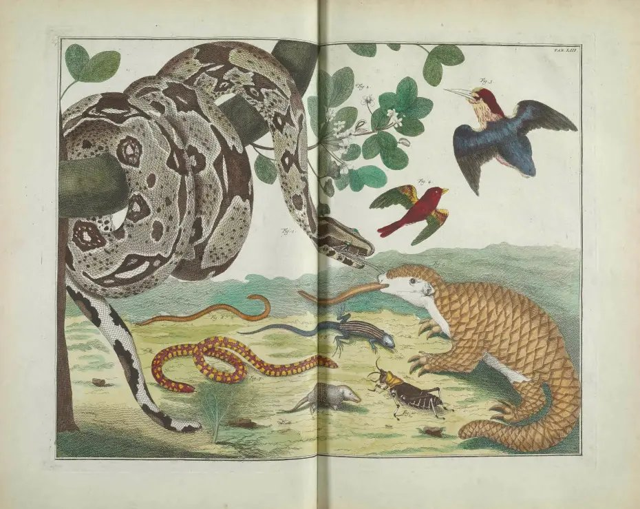

Thesaurus, Volume 1, Tab. LIII
Albertus Seba · 1734 · Hand-coloured engraving · Smithsonian Libraries and Archives
Free to use
Albertus Seba was an apothecary with a shop near the Amsterdam harbour. He asked sailors and ships' surgeons to bring him exotic plants and animal products for his medicines, and began collecting snakes, birds, insects, shells and lizards in his house. This plate comes from the first volume of his catalogue, published in 1734.